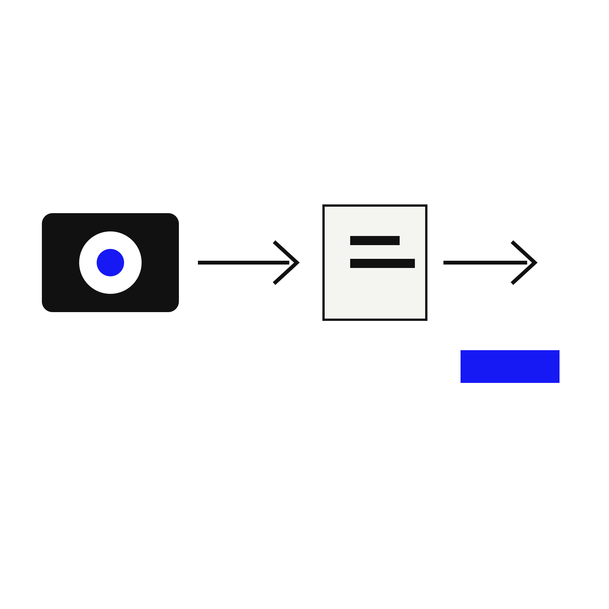

News Analysis
Camera phones are becoming AI workflow devices
The 2026 camera-phone race is no longer only about sensors, lenses, and image quality. AI camera features are turning the phone camera into a workflow device: it can coach, search, translate, summarize, identify, and help users act on what they see.

The hardware story is changing
Camera-phone coverage still ranks devices by photo and video quality, zoom, portraits, and lenses. But AI features are increasingly part of the buying logic. The useful camera is not only the one that captures the best image; it is the one that helps the user understand and use the image.
That shift matters for visual intelligence. A better sensor creates more usable input. AI workflows turn that input into answers, labels, comparisons, reminders, translations, product searches, and explanations.
What to watch
The next important camera-phone features will be less about megapixel claims and more about workflows: camera coaching, scene understanding, object identification, on-screen visual search, and the ability to move from image to action without rewriting the query in text.
Kaleido Field view
Camera hardware and visual intelligence software are converging. For users, the winning experience is not “best camera” in isolation. It is the shortest path from seeing something to understanding it.